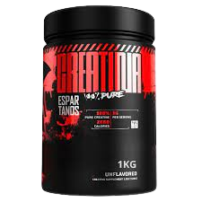

Creatina Monohidratada Pura 1kg - Espartanos
Indicado para: Auxilia Ganho de Energia
Glúten: Não Contém.
Creatina Monohidratada 100% Pura da Espartanos, aprovada em todos os testes de pureza, é um suplemento de alta qualidade e confiabilidade para atletas e praticantes de musculação. Comprovada através de análises laboratoriais rigorosas, essa creatina atinge os mais altos padrões de pureza disponíveis no mercado. Produzida diretamente em nossa fábrica, sem a intervenção de intermediários, a Creatina Monohidratada é submetida a um processo detalhado de controle de qualidade. Cada lote é minuciosamente testado para garantir que apenas a creatina da mais alta qualidade seja embalada e disponibilizada para os consumidores.
Ao escolher a Creatina Monohidratada 100% Pura da Espartanos, você está optando por um suplemento que pode aumentar a energia explosiva, melhorar o desempenho atlético e promover o crescimento muscular magro.
A sugestão de consumo determinada pela ANVISA é de 3gr ao dia.Não existe consenso entre pesquisadores sobre o melhor horário para consumo, existem evidencias que apontam para maiores benefícios quando consumida na refeição pré-treino, assim como também existem evidencias para melhores benefícios quando consumida junto com a refeição pós-treino.